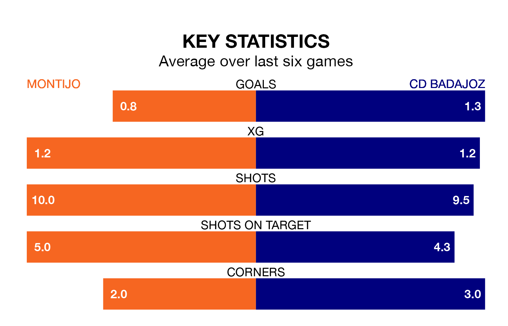

Struggling Montijo face CD Badajoz at the Estadio Municipal Emilio Macarro Rodriguez on Sunday looking to build on a win in their last league outing.
After securing all three points with a 0-2 victory over Gimnástica Segoviana CF on April 14, Montijo sit bottom of the Segunda División RFEF Group 5.
They travel to play a Badajoz side 16th in the standings, who also won their last match, 3-0 against CD Mensajero.
Montijo are in terrible form in the Segunda División RFEF Group 5, with no wins and a draw from their last six games.
With two wins and three draws over that period, Badajoz's form is much better – they have taken nine points from 18, compared to the home side's one.
With 26 goals in 31 games so far this season, Montijo are scoring at below the league average rate with 0.8 goals per game. And they are conceding more than average, letting in 51 goals at a rate of 1.6 per game.
The visitors are also below average scorers, with 0.9 goals per game, compared to a league average of 1.1. They have conceded 1.0 goal per game.
Updated: 11:31 (UTC), 15/04/24